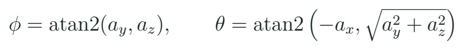
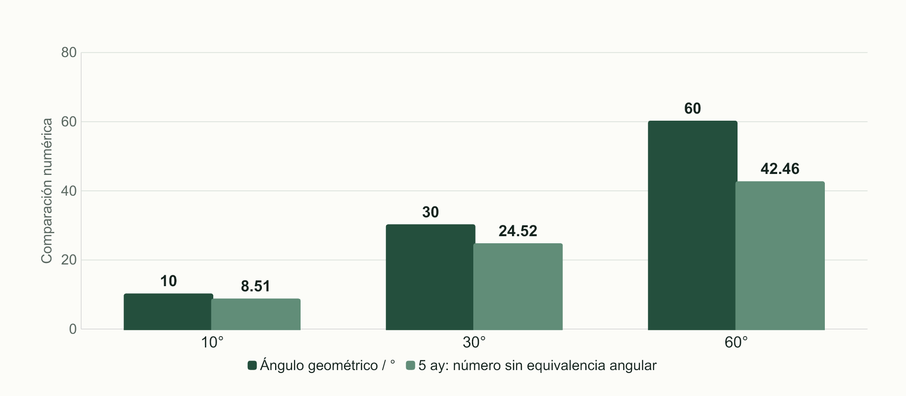
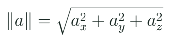

IMU y orientación de banco: medir antes de estabilizar
Distinguir aceleración, velocidad angular e inclinación estimada y obtener un registro con unidades.
Qué significa seis ejes
La IMU del proyecto MPU6050 combina tres componentes de aceleración y tres de velocidad angular. Esos seis canales no equivalen a seis ángulos medidos directamente. El acelerómetro y el giróscopo responden a magnitudes distintas. Antes de interpretar un número se necesita un sistema de ejes ligado al montaje, una unidad y una configuración de rango.

En reposo, la lectura del acelerómetro permite observar la dirección asociada a gravedad bajo las condiciones del banco. Durante movimiento se añaden otros efectos y esa lectura no se interpreta automáticamente como inclinación. El giróscopo aporta velocidad angular; al integrarla se obtiene una estimación de cambio angular que también acumula error por sesgo. Ambas observaciones pueden complementarse, pero ninguna se vuelve una orientación completa por cambiar el nombre de una variable.
La clase separa los atributos del simulador de las unidades que devuelve una biblioteca. En Wokwi se pueden introducir valores en g y grados por segundo. La biblioteca Adafruit utilizada presenta aceleración en m/s² y giro en rad/s. Ese cambio de representación debe reconocerse antes de aplicar fórmulas o escalas.
Un ángulo a partir de la gravedad del banco

Estas expresiones se usan en la práctica cuasiestática, con la referencia de ejes declarada. atan2 considera la relación entre componentes y su cuadrante. Multiplicar aceleración por una constante no representa en general esa geometría. Cerca de una inclinación pequeña puede parecer que dos curvas se parecen, pero la coincidencia local no demuestra una conversión universal.
Inclinación de 30 grados
En un caso ideal estático, ay = 4,903 m/s² y az = 8,493 m/s². ¿Qué informa atan2(ay,az) en grados?
Ver razonamiento del caso
Aproximadamente 30°. Multiplicar ay por 5 produciría 24,5 sin una justificación general de unidades ni de geometría.
Magnitud y unidad de la biblioteca
| Variable | Unidad | Interpretación |
|---|---|---|
| a.acceleration.x | m/s² | Componente del acelerómetro |
| g.gyro.x | rad/s | Velocidad angular |
| Ángulo calculado | rad o grados | Estimación bajo hipótesis |
Sesgo, ruido y configuración
El sesgo es una desviación sistemática de la lectura. Una lectura con variación pequeña puede conservar un sesgo grande: repetir bien no equivale a medir correctamente. En un ensayo de reposo se observan muestras y se explica qué referencia permite interpretar cada eje. Para el giróscopo, una media distinta de cero en un montaje realmente quieto puede orientar una estimación de sesgo bajo esas condiciones.
Tres comprobaciones iniciales
| Prueba | Qué observar | Qué no concluye sola |
|---|---|---|
| Reposo | Norma y giro medio | Exactitud completa |
| Inclinación lenta | Signo y orientación | Actitud dinámica de vuelo |
| Movimiento rápido | Cambios y dispersión | Separación perfecta de efectos |
El rango configurado y el filtrado del sensor influyen en lo que se obtiene. Un rango mayor permite representar magnitudes mayores, pero no significa más detalle para todos los cambios pequeños. Un filtro puede reducir componentes rápidas y añadir retardo. El docente conserva el rango y el filtro al comparar dos posiciones, y modifica una elección a la vez cuando estudia su efecto.
Dato estable, explicación incorrecta
El nivel de burbuja parece suave al mover el equipo rápidamente. ¿La suavidad demuestra que separó inclinación y aceleración dinámica?
Ver razonamiento del caso
No. Puede haber filtrado o una representación gráfica suavizada. Hace falta relacionar hipótesis, movimiento y medida.

Lectura del firmware de IMU
Fragmento de c12_imu
sensors_event_t a, g, temp;
imu.getEvent(&a, &g, &temp);
float roll = atan2f(a.acceleration.y,
a.acceleration.z) * 180.0f/PI;
float gx_rad_s = g.gyro.x;El archivo completo prepara I2C21/22, verifica inicialización, configura rangos y registra tiempo con los valores. El alumno identifica cuál de sus variables es una medida y cuál es una transformación. Cambiar la orientación física del módulo puede invertir signos o intercambiar ejes; la corrección se documenta como una convención del montaje, no como un ajuste secreto para que una pantalla parezca correcta.
El proyecto de mouse aéreo aporta una aplicación de velocidad angular. Antes de probar BLE se puede observar cómo cambia gx_rad_s en serie. La radio Bluetooth no está implementada en el simulador ESP32 de Wokwi consultado; la experiencia de mouse requiere hardware y una biblioteca compatible. La existencia del enlace del proyecto no garantiza que ese perfil inalámbrico pueda demostrarse dentro de la simulación.
Laboratorio de orientación lenta
- Identifica ejes, alimentación y conexiones del módulo utilizado.
- En el simulador, reconoce las unidades de los atributos y compáralas con la biblioteca.
- Ejecuta c12_imu y conserva un registro de reposo.
- Realiza inclinaciones lentas de referencia y comprueba signo y tendencia.
- Calcula un caso a mano con atan2 y conserva la convención.
- Muestra un movimiento dinámico y explica por qué la interpretación cambia.
- Distingue validez de la comunicación de validez de una estimación angular.
El modelo de Wokwi permite explorar componentes y verificar conversiones conocidas. En el banco físico se describen el movimiento realizado y la referencia disponible. Una regla o soporte angular puede ayudar a contrastar un caso lento. No se inventa una medida de inclinación exacta cuando el método solo permitió observar el sentido y una variación aproximada.
Por qué este bloque precede al mando
El controlador de la clase siguiente comparará una referencia y una estimación. Si ambas usan escalas o ejes distintos, el error numérico puede tener un significado falso aunque el programa compile. Por eso primero se aprende a leer la IMU. El estudiante debe poder señalar de dónde salió cada número antes de proponer una acción correctiva.

Investiga cómo se acumula un sesgo pequeño del giróscopo al integrar durante varios segundos. Como caso ideal, 0,5 grados/s sostenidos durante 10 s producen 5 grados de cambio estimado aunque el equipo no haya girado. Relaciona ese cálculo con la necesidad de referencias y calibración. El curso introduce el problema sin convertirlo en una implementación completa de estimación de vuelo.
Práctica guiada
- Presentar acelerómetro y giróscopo como magnitudes diferentes.
- Resolver el caso estático de 30° con la convención de ejes.
- Comprobar c12_imu y su registro de unidades.
- Contrastar inclinación lenta, movimiento dinámico y aplicación de mouse.
Preguntas de cierre
¿Seis ejes equivalen a seis ángulos directos?
No. Son componentes de aceleración y velocidad angular.
¿La biblioteca Adafruit devuelve giro en grados/s?
En el evento utilizado devuelve rad/s; se convierte explícitamente si hace falta otra unidad.
¿Un gráfico suave prueba actitud correcta?
No. Hay que revisar hipótesis, ejes, movimiento y referencia.
Entrega
Registro de reposo e inclinación, caso atan2 y convención de unidades.
Proyectos MECRO relacionados
- 16. Nivel de Burbuja Digital · Núcleo. IMU estática y datos válidos Abrir referencia Wokwi
- 17. Mando de Vuelo (Flight Controller) · Núcleo corregido. Mando y demostración P de banco Abrir referencia Wokwi
- 18. Mouse Aéreo (Air Mouse) · Opcional físico. Ratón BLE; Bluetooth no simulado Abrir referencia Wokwi
Fuentes para ampliar
[MECRO] MECRO. Laboratorio Electrónica con ESP32: veinte proyectos.
[IMU] Adafruit. MPU6050: biblioteca, cableado y lectura.
[IMUSIM] Wokwi. MPU6050: atributos del modelo.
[WIRE] Espressif Systems. Arduino-ESP32: I2C.
[WOKWI] Wokwi. ESP32 Simulation: periféricos y límites.